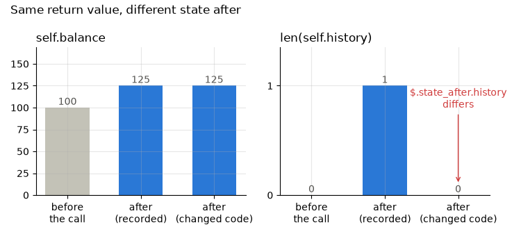

Note
Go to the end to download the full example code.
record_method : recording and replaying methods¶
A method’s behavior is as much about the object it acts on as about its arguments, so
record_method snapshots self before and after the call and records both.
That captures what record_func structurally cannot: a method that still returns the
right answer but stops updating its object correctly. Replay rebuilds self in its
recorded state, calls the method on the recorded arguments, and checks both the return
value and the state after.
Setup: where records go¶
The code under test reads its store from the REGRESSION_RECORDS_STORE environment
variable when it is imported, so the variable is set first
(record_func : recording a first call says why).
import os
import tempfile
from pathlib import Path
# In a project: REGRESSION_RECORDS_STORE=tests/regression_data in a .env file, loaded
# with python-dotenv's load_dotenv(). Here: a fresh temporary directory, empty each run.
STORE = Path(tempfile.mkdtemp(prefix="regression-records-"))
os.environ["REGRESSION_RECORDS_STORE"] = str(STORE)
print("store:", STORE)
store: /tmp/regression-records-ngcaweyx
Setup: the code under test¶
Replay imports a method’s class by module and name, as it does a function, so a class
defined on this page - in __main__ - is refused when its method is decorated. In
your project the class lives in your own package; here the page imports one module,
ledgers, from regression_records._examples - support code that ships with the
package so that a page can import real code rather than define it in a cell
(record_func : recording a first call says more). Each class is
printed where the page first uses it.
KEEP_HISTORY lets the page break Ledger.apply without editing the source:
switched off, apply still returns the right balance but stops appending to
history.
import inspect
import json
from regression_records._examples import ledgers
def show_record(qualname: str, keys: list[str]) -> dict:
"""Print the first record of ``qualname``, only the keys named, and return it."""
for path in sorted(STORE.rglob("rec-*.json")):
record = json.loads(path.read_text())
if record["identity"]["qualname"] == qualname:
print(json.dumps({k: record[k] for k in keys}, indent=2))
return record
raise LookupError(qualname)
def show_cases(report) -> None:
"""Print one line per replayed record: its status and function."""
for case in report.cases:
print(f" {case.status.value:<14} {case.name} record {case.record_id[:8]}")
Recording is off unless switched on; this page switches it on for the whole script.
from regression_records import (
RecordStore,
SerializationError,
enable,
record_method,
replay,
)
enable()
A recorded method¶
Ledger.apply is decorated with record_method, which takes a store just as
record_func does:
print(inspect.getsource(ledgers.Ledger))
class Ledger:
"""A balance and the balances it held before each change."""
def __init__(self, balance: float):
self.balance = balance
self.history: list[float] = []
@record_method(STORE)
def apply(self, delta: float) -> float:
"""Add ``delta`` to the balance, keeping the old balance in ``history``."""
if KEEP_HISTORY:
self.history.append(self.balance)
self.balance += delta
return self.balance
ledger = ledgers.Ledger(100.0)
print("returned:", ledger.apply(25.0))
print("state now:", ledger.balance, ledger.history)
returned: 125.0
state now: 125.0 [100.0]
Both sides of the call are in the record¶
state_before is deep-copied before the method runs. That copy is the whole
point: a snapshot that shared the object’s lists would quietly turn into a picture of
the state afterwards, and the record would show nothing having changed.
{
"invocation": {
"args": [],
"kwargs": {
"delta": 25.0
}
},
"state_before": {
"balance": 100.0,
"history": []
},
"state_after": {
"balance": 125.0,
"history": [
100.0
]
},
"output": 125.0
}
Notice invocation.args is empty and self appears nowhere. The receiver is
described by its captured state instead: hashing the instance as an argument would
make every instance, and (since most objects hash by identity) every run, a separate
case.
Two instances in different states¶
The same call on an object in another state is another record. Both records share the call’s input hash, which covers the arguments only; the state before tells them apart.
ledgers.Ledger(999.0).apply(25.0)
store = RecordStore(STORE)
identity = ledgers.Ledger.apply.identity
ctx = store.deserialization_context(identity)
records = store.list_records(identity)
for rec in records:
print(
f" input_hash {rec.input_hash[:12]} record {rec.record_id[:8]}"
f" balance before {rec.load_state_before(ctx)['balance']}"
f" returned {rec.load_output(ctx)}"
)
assert len(records) == 2 and len({r.input_hash for r in records}) == 1
input_hash c9856ed61e99 record 4c084a45 balance before 100.0 returned 125.0
input_hash c9856ed61e99 record 9feb38e9 balance before 999.0 returned 1024.0
Replaying them¶
For each record, replay imports Ledger, rebuilds an instance from
state_before, calls the original apply on it with the recorded arguments,
and compares the return value with output and the instance’s state afterwards
with state_after. state_before is the input, so it is not compared.
Ledger records its whole state, so replay rebuilds it as any recorded object is
rebuilt: object.__new__(Ledger), then the recorded attributes set on it.
__init__ is not called - a constructor may need a database or an argument nobody
kept - so an invariant that only __init__ sets up, without storing it as an
attribute, is not there on replay. __getstate__ / __setstate__ are not used
either: an object is its attributes, whatever its pickling hooks say.
report = replay(STORE)
show_cases(report)
assert report.passed, report.summary()
passed regression_records._examples.ledgers:Ledger.apply record 4c084a45
passed regression_records._examples.ledgers:Ledger.apply record 9feb38e9
The regression a return value hides¶
Suppose a later version of apply stops appending to history while keeping
the arithmetic right. It still returns 125.0, so a test asserting on the return value
passes. Switching off ledgers.KEEP_HISTORY stands in for that edit.
ledgers.KEEP_HISTORY = False
try:
report = replay(STORE)
finally:
ledgers.KEEP_HISTORY = True
show_cases(report)
print()
print(report.failures[0].describe())
paths = {d.path for case in report.failures for d in case.comparison.diffs}
assert report.counts()["differs"] == 2
assert paths == {"$.state_after.history"}, paths
differs regression_records._examples.ledgers:Ledger.apply record 4c084a45
differs regression_records._examples.ledgers:Ledger.apply record 9feb38e9
differs: regression_records._examples.ledgers:Ledger.apply record 4c084a45 (regression_records/_examples/ledgers/Ledger.apply/records/rec-c9856ed61e9925bf-4c084a45.json)
comparison failed with 1 diff(s):
at '$.state_after.history' (length_mismatch): length 0 != expected 1
The return value matched; the difference is at $.state_after.history, the
regression record_func could not have seen. Side by side, for the first record:
the recorded call moved the balance and grew the history; the changed code moves
only the balance.
import matplotlib.pyplot as plt
recorded_before, recorded_after = record["state_before"], record["state_after"]
ledgers.KEEP_HISTORY = False
try:
changed = ledgers.Ledger.__new__(ledgers.Ledger)
changed.balance, changed.history = recorded_before["balance"], []
ledgers.Ledger.apply.__wrapped__(changed, 25.0)
finally:
ledgers.KEEP_HISTORY = True
columns = ["before\nthe call", "after\n(recorded)", "after\n(changed code)"]
balance = [recorded_before["balance"], recorded_after["balance"], changed.balance]
history = [
len(recorded_before["history"]),
len(recorded_after["history"]),
len(changed.history),
]
assert balance[1] == balance[2] == 125.0
assert history == [0, 1, 0]
fig, (left, right) = plt.subplots(1, 2, figsize=(7.5, 3.4))
panels = ((left, balance, "self.balance"), (right, history, "len(self.history)"))
for ax, values, name in panels:
colors = ["#c3c2b7", "#2a78d6", "#2a78d6" if values[2] == values[1] else "#d03b3b"]
ax.bar(columns, values, color=colors, width=0.6)
for x, v in enumerate(values):
ax.annotate(
f"{v:g}",
(x, v),
xytext=(0, 3),
textcoords="offset points",
ha="center",
color="#52514e",
)
ax.set_title(name, loc="left")
ax.set_ylim(0, max(values) * 1.35)
right.annotate(
"$.state_after.history\ndiffers",
(2, 0.1),
xytext=(2, 0.8),
color="#d03b3b",
ha="center",
arrowprops={"arrowstyle": "->", "color": "#d03b3b"},
)
right.set_yticks([0, 1])
fig.suptitle("Same return value, different state after", x=0.02, ha="left")
fig.tight_layout()

State that must not be recorded¶
state_before is a deep copy, and plenty of real attributes cannot be deep-copied
at all - locks, sockets, database connections, open files. Others can be copied but
should not be compared, like a cache or a timestamp.
By default every attribute is captured, so an object holding a connection fails
loudly rather than recording something misleading. NaivePricer holds a
Connection, which holds a lock:
print(inspect.getsource(ledgers.Connection))
print(inspect.getsource(ledgers.NaivePricer))
class Connection:
"""Stands in for a database connection: live, and impossible to deep-copy."""
def __init__(self):
self.lock = threading.Lock()
def lookup(self, symbol: str) -> float:
"""Return the price of ``symbol``."""
return PRICES[symbol]
class NaivePricer:
"""Records every attribute, connection included, which cannot be snapshotted."""
def __init__(self, connection: Connection):
self.connection = connection
self.quotes = 0
@record_method(STORE)
def value(self, symbol: str, quantity: int) -> float:
"""Return the value of ``quantity`` units of ``symbol``."""
self.quotes += 1
return quantity * self.connection.lookup(symbol)
try:
ledgers.NaivePricer(ledgers.Connection()).value("ACME", 10)
except SerializationError as e:
print(f"SerializationError: {e}")
else:
raise AssertionError("a lock cannot be recorded")
SerializationError: cannot snapshot state for an instance of 'NaivePricer': deep-copying its attributes failed (cannot pickle '_thread.lock' object). Exclude the offending attribute with exclude_attrs=(...), or list only what matters with state_attrs=(...).
exclude_attrs names what to leave out; state_attrs names what to keep, from
the other direction. Either way the record holds only part of the object, which is
not enough to rebuild it: replay would have no connection to give value. So both
need factory=, a zero-argument callable returning an instance, on which replay
sets the recorded attributes. Leaving it out is refused when decorating:
try:
record_method(STORE, exclude_attrs=("connection",))
except TypeError as e:
print(f"TypeError: {e}")
else:
raise AssertionError("exclude_attrs without a factory is refused")
TypeError: record_method with state_attrs or exclude_attrs records only part of the object's state, which replay cannot rebuild the object from; pass factory=, a zero-argument callable returning an instance to set the recorded attributes on
Pricer excludes its connection, and its factory, new_pricer, opens a new one:
print(inspect.getsource(ledgers.new_pricer))
print(inspect.getsource(ledgers.Pricer))
def new_pricer() -> Pricer:
"""Build a ``Pricer`` on a fresh connection: the factory replay rebuilds it with."""
return Pricer(Connection())
class Pricer:
"""Leaves its connection out of the record; replay gets one from ``new_pricer``."""
def __init__(self, connection: Connection):
self.connection = connection
self.quotes = 0
@record_method(STORE, exclude_attrs=("connection",), factory=new_pricer)
def value(self, symbol: str, quantity: int) -> float:
"""Return the value of ``quantity`` units of ``symbol``."""
self.quotes += 1
return quantity * self.connection.lookup(symbol)
pricer = ledgers.Pricer(ledgers.Connection())
print("returned:", pricer.value("ACME", 10))
pricer_record = show_record("Pricer.value", ["state_before", "state_after"])
assert "connection" not in pricer_record["state_before"]
returned: 1015.0
{
"state_before": {
"quotes": 0
},
"state_after": {
"quotes": 1
}
}
state_attrs suits an object where only a couple of attributes matter.
Survey records its origin and marks, custom objects that are recorded in full,
recursively; its factory can be any callable, a lambda included, since replay calls
it rather than importing it.
print(inspect.getsource(ledgers.Survey))
class Survey:
"""Records only the two attributes named in ``state_attrs``."""
def __init__(self):
self.origin = Point(0.0, 0.0)
self.marks: list[Point] = []
@record_method(STORE, state_attrs=("origin", "marks"), factory=lambda: Survey())
def mark(self, x: float, y: float) -> int:
"""Add a mark at ``(x, y)``, move the origin halfway to it, return the count."""
self.marks.append(Point(x, y))
self.origin = Point(x / 2, y / 2)
return len(self.marks)
survey = ledgers.Survey()
survey.mark(4.0, 6.0)
print("origin:", survey.origin, "marks:", survey.marks)
origin: Point(x=2.0, y=3.0) marks: [Point(x=4.0, y=6.0)]
Point lives in ledgers.py for the same reason Survey does: a recorded
object is re-imported by its class’s module and name when the record is loaded
(to_json_tree, from_json_tree : custom classes stored by their attributes).
The decorator, not the record, decides how a receiver is rebuilt: replay uses the
state_attrs, exclude_attrs and factory the method is decorated with
now. Every method record in the store replays:
report = replay(STORE)
show_cases(report)
assert report.passed, report.summary()
passed regression_records._examples.ledgers:Ledger.apply record 4c084a45
passed regression_records._examples.ledgers:Ledger.apply record 9feb38e9
passed regression_records._examples.ledgers:Pricer.value record 7ec63837
passed regression_records._examples.ledgers:Survey.mark record a251e3b2
A factory that returns an instance of another class, or a rebuild that raises, makes
the case not_replayable, with the reason in case.error.
The decorated method is a plain function assigned on the class, so nothing about
ordinary Python is disturbed: descriptor binding, inheritance, isinstance,
functools.wraps metadata and super() all behave as usual.
assert ledgers.Survey.mark.__name__ == "mark"
assert type(ledgers.Survey().mark).__name__ == "method"
assert (identity.module, identity.qualname) == (ledgers.__name__, "Ledger.apply")
print("recorded identity:", identity.module, identity.qualname)
recorded identity: regression_records._examples.ledgers Ledger.apply
Next: replay : exceptions and code drift in the report - recording a call that raises, and noticing code that changed.
Total running time of the script: (0 minutes 0.168 seconds)